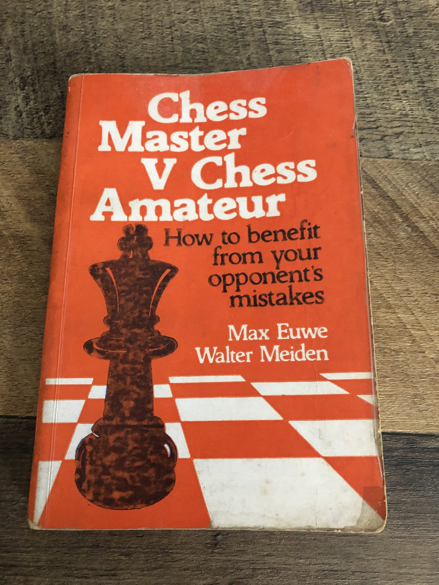
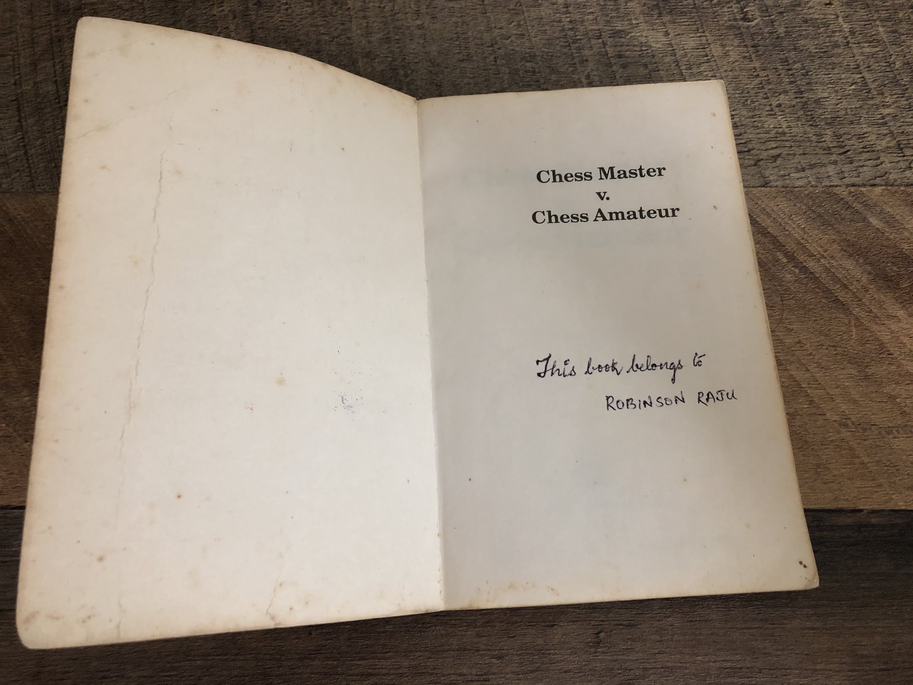

“It’s foolish to run the risk of going mad for vanity’s sake.” ~ French Philosopher Diderot (From Netflix’s “The Queen’s Gambit” 1)
The Dream
For the first time in so many years, I had a dream about Chess. Like many dreams, it is in the mind and is kind of difficult to exactly describe it. But, here is the idea - I was a piece moving on a large Chessboard crowded with a lot of pieces, trying to figure out how to navigate. At the same time, I was also the invisible hand from above that was pondering how to move not just myself but also the other pieces. I suddenly realized that I had the power to move other pieces. Wow! The joy was short-lived when I realized that even if I move the other pieces, I could still lose like I’ve lost many times while playing with myself. I’ve played a lot of games with myself and what I’ve many times found is, even though I’m thinking for my opponent and anticipating the moves, I sometimes come up with a move that I didn’t think of before. It is like a particular pathway or a set of moves for the opponent becomes visible only after I make my move!
The dream was probably because yesterday I had finished watching The Queen’s Gambit1 on Netflix which was based on Walter Tevis’s book2 by the same name. To say that it was exciting would be an understatement. It was mind-blowing and in many ways, personal. It took me back to a time when I was actively playing Chess. I’d define ‘Active’ as playing at least an hour on a daily basis or for 10 hours or so on the weekends. Active to me, means immersed in something so that it appears in my dream in some form. Most of my dreams in the last decade or so has been about work and all things related to it. In fact, I had dreams about projects, teams and meetings even two months after I left my last job since I was so deep into it.
The beauty of Chess
The beauty of Chess is that it is not a game about merely winning or losing, but enjoying the journey to the goal. It is about the strategies that are uncovered during the ups and downs of the game. Like in life, we’re sometimes surprised by the moves our opponents make, taken aback more by foolish ones than brilliant ones. We realize that we sometimes give undue importance to others and place them above us when it is not needed. Many times, we’re even surprised by the moves we make. It comes like a lightning at a certain point. Sometimes when we look at a bad position, we realize that it is the effect of a bad move 10 moves in the past. We realize that one bad move in a game or in life, could chart us towards a path from which there is no deliverance. We then pray for the opponent to make a mistake like gambler waiting for a lottery ticket win to restore his fortunes.
As we play many games and grow in our abilities, we realize that the greatest enablers in our life were never the spectator-fans who cheered us in the sidelines but the opponents at the other end who beat us and dared us to rise up again or others who valiantly tried to match us till the end.
Nostalgia - My First Chess Book
Few things make me nostalgic as discussing books or playing Chess. Maybe many years later I might also begin to be nostalgic about my 24x7 work style in the last couple of decades. There was a thrill to it, of course. After finding time to read a lot of books in the last few months and now seeing a series on Chess, I realize what I missed in the last 15 years. It is a great feeling to be transported to a time when your day was different and when you were a different person. It is like the joy that one feels while looking at journal entries from the past.
Yesterday, I looked at the Chess books that I have on my bookshelf, and leafed through the first book that I’d ever read on Chess - Chess Master V Chesss Amateur3 by Max Euwe and Walter Meiden. It has notations in the old format and looks so old!
|  |  |
|---|
There are 25 chapters, each dealing with a famous Chess Opening or a variant of it. I had crossed out Queen’s Gambit as an opening that I didn’t like! All my initial games were e4 (P-K4) with opponents playing either knight-bishop variants or fianchetto variants. So, when I encountered Queen’s Gambit for the first time in high school, I wasn’t quite prepared for it. It seemed like an odd opening. The book made it familiar though.
The book also made me visualize a Chess game as someone who is rowing upstream from the mouth of a river. A river with a million tributaries upstream. You could take any path and go through a stream into a forest that you’re unfamiliar with. The key is to play as many games as possible, mostly in your head and visualize the paths and become familiar. There is no fear of the unknown when you’re familiar with the terrain.
I spent a lot of time today walking down the memory lane from my first Chess game with a bachelor in my lane, others in my locality, friends in high school, friends in engineering and at work, some competitions, etc. It all seemed so far away. The last game of Chess that I played was with my niece when I visited Bangalore a couple of years back.
The point is that something that is central to one’s life at this point in time need not be so in a couple of decades.
Queen’s Gambit, the Netflix series
Though I got nostalgic and went on a tangent, the main intent of writing this post was to make a list of all the books mentioned in the series and may be a list of all the openings. The best thing is, I found so many articles online by people who were passionate about the series and wrote at length about the games in the book. The articles in chessbase.in4 by Shahid Ahmed where he goes over every game in every episode and one in Medium by Kurry Tran5 who gives a detailed breakdown of the final match with Borgov, were astounding.
The titles of each episode are so meaningful. Each reference an important stage in a chess game as well an important time in Beth’s life. There are 7 episodes with titles as Openings, Exchanges, Doubled Pawns, Middle Game, Fork, Adjournment, End Game.
The first episode3 has Mr.Shaibel giving Beth a book named “Modern Chess Openings” and talking about Scholar’s Mate, The Sicilian Defense, The Levenfish Variation, The Najdorf Variation and The Queen’s Gambit. The number of openings and books mentioned only go up after this and it is a relish to watch.
More than anything, the most enjoyable bits were the commentaries by people when games were being played. The commentators were super passionate and one could feel the tension in the people who were watching the games.
When I saw the scene of a street in Russia full of tables with old people playing, it gave a glimpse of an ideal retirement place and activity for me. The series ends with Beth playing with one of those people in the street. How idyllic!
Books mentioned in the series
This is not an exhaustive list. There are a lot of references to books and booklets that contain games played between GMs. The series drives home the point that studying games of masters is very critical to having a profound understanding of the game. Modern Chess Openings (MCO) is referenced so many times and it is not surprising that the book (15th Edition) is out of stock on Amazon!
Episode 1 - Openings4
- Modern Chess Openings6 by Griffith and White
Episode 2 - Exchanges7
-
My Chess Career8 by José Raúl Capablanca
-
Pawn Power in Chess9 by Hans Kmoch
-
Modern Chess Openings10 by Walter Korn
-
Books that Beth sees in the Bookshop (from the book11)
Episode 3 - Doubled Pawns16
- No mention of a specific book
Episode 4 - Middle Game17
- Basic Chess Endings18 by Reuben Fine
Episode 5 - Fork19
- My Chess Career8 by J.R. Capablanca (Already mentioned above)
- Alekhine’s Games 1938 to 1945 by Fornaut (Fornaut edition seems to be fictional. Couldn’t find it. Probably refers to Alexander’s20 version)
Episode 6 - Adjournment21
- No mention of a specific book though there are a lot of books in Benny Watts’ apartment.
Episode 7 - End Game5
- Jolene returns the book that she stole (MCO)
Fictional Books
- Improved Chess Strategy
- Middlegame Strategy by A.I. Deinkopf
- Rook and Pawn Endings by Meyer
- Vasily Borgov: My Life in Chess
- Benny Watts: My Fifty Best Games of Chess
Image Credit - The Queen’s Gambit by mbgrigby via Flickr (https://flic.kr/p/5kLqMs)
Footnotes
-
Tevis, Walter S.. The Queen’s Gambit. United States: Vintage Contemporaries, 2003. ↩
-
https://www.google.com/books/edition/Chess_Master_Vs_Chess_Amateur/xW5EdaWwijoC?hl=en ↩ ↩2
-
https://chessbase.in/news/The-Queens-Gambit-Episode-1-review ↩ ↩2
-
https://kurrytran.medium.com/borgov-v-harmon-game-analysis-in-the-netflix-miniseries-the-queens-gambit-b475110af701 ↩ ↩2
-
White, J. H.., Griffith, Richard Clwein. Modern Chess Openings. United Kingdom: J.H. White, 1911. ↩
-
https://chessbase.in/news/The-Queens-Gambit-Episode-2-review ↩
-
Capablanca, José Raúl. My Chess Career. United Kingdom: G. Bell and sons, Limited, 1920. ↩ ↩2
-
Kmoch, Hans. Pawn Power in Chess. United States: D. McKay Company, 1959. ↩
-
Korn, Walter. Modern chess openings.. United Kingdom: Pitman, 1972. ↩
-
The Queen’s Gambit by Walter Tevis - online free book ↩
-
Napier, William Ewart. Paul Morphy and the Golden Age of Chess. United States: D. McKay Company, 1957. ↩
-
Chernev, Irving. Winning Chess Traps: 300 Ways to Win in the Opening. United Kingdom: Chess review, 1946. ↩
-
Horowitz., Reinfeld, Fred. How to Improve Your Chess. United Kingdom: Simon & Schuster, 1972. ↩
-
Reinfeld, Fred. Attack and Counterattack in Chess: How to Plan Your Game and Cope with Unexpected Situations. United States: Barnes & Noble, 1958. ↩
-
https://chessbase.in/news/The-Queens-Gambit-Episode-3-review ↩
-
https://chessbase.in/news/The-Queens-Gambit-Episode-4-review ↩
-
Fine, Reuben. Basic Chess Endings. (Second edition.).. United States: David McKay Company, 1946. ↩
-
https://chessbase.in/news/The-Queens-Gambit-Episode-5-review ↩
-
Alexander, Conel Hugh O’Donel., Alekhine, Alexander. Alekhine’s Best Games of Chess, 1938-1945. United States: Harcourt, Brace, 1950. ↩
-
https://chessbase.in/news/The-Queens-Gambit-Episode-6-review ↩